単元8: 西洋美術史
西洋（ヨーロッパ）の美術の歴史を、先史時代から現代アートまで一気に解説します。キリスト教の影響を受けた中世、大天才たちが競い合ったルネサンス、光の表現に挑んだ印象派、そして20世紀のモダンアートまで、テストで確実に狙われるポイントを覚えましょう！
1. 先史・古代・中世の美術（人類の始まり〜キリスト教美術）
キリスト教がヨーロッパを支配する中世までの、祈りや信仰に関わる歴史的表現です。
① 先史時代の洞窟壁画
- アルタミラ洞窟壁画（スペイン）：旧石器時代の遺跡。天井などに野牛などの動物が力強く描かれ、狩猟の成功（獲物の豊かさ）を祈って描かれたとされる。
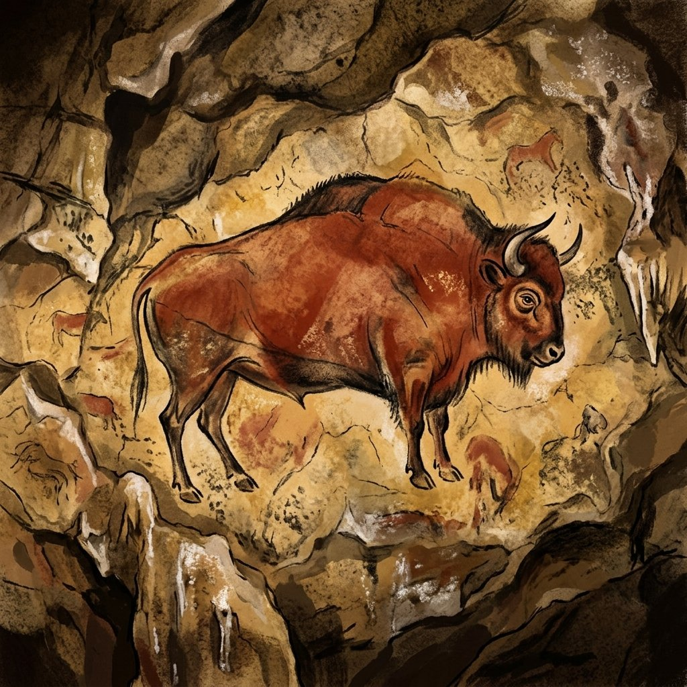
- ラスコー洞窟壁画（フランス）：同じく旧石器時代の非常に有名な野生動物の洞窟壁画。
② 古代ギリシャ・ローマの肉体美と建築
- パルテノン神殿（ギリシャ）：アテネの丘に建てられた神殿。安定感をもたらす美の比率「黄金比（約 1 : 1.618）」が用いられている。
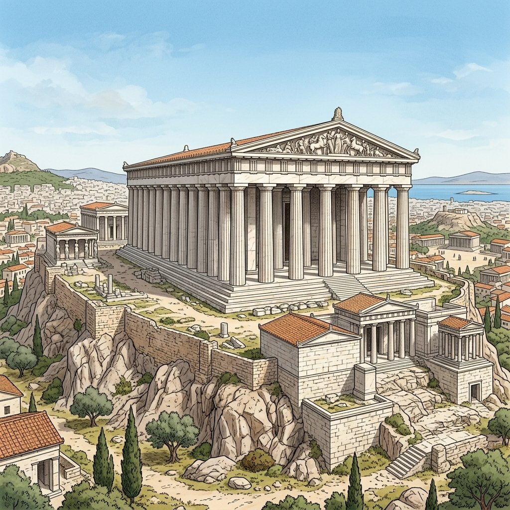
- ミロのヴィーナス（ギリシャ）：両腕が失われているものの、古代ギリシャの理想的な女性の肉体美を表現した大理石彫刻。
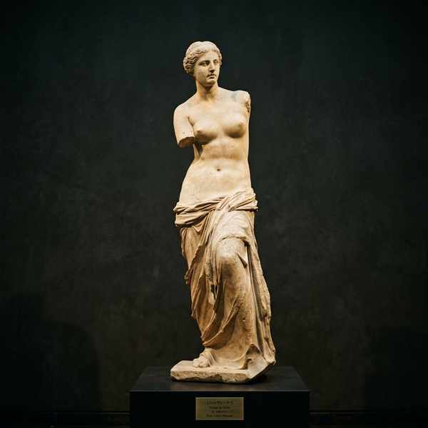
- コロッセウム（ローマ）：水道橋などと同様、古代ローマ帝国の高度な土木・建築技術を示す実用的な闘技場。
③ 中世ヨーロッパのキリスト教美術
- モザイク画：ビザンティン美術などで見られる、着色ガラスや石の小片を壁や床にしきつめて聖書の世界を描いたもの。
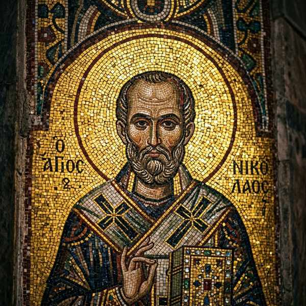
- ステンドグラス：ゴシック様式の教会で流行。色ガラスを鉛枠で組み合わせた窓装飾で、聖書の文字が読めない人々にキリストの教えを伝える役割も果たしました。

2. ルネサンスの美術（人間中心への回帰）
14〜16世紀頃のイタリアを中心に起きた、中世の神中心の考え方から、古代ギリシャ・ローマのように「人間のありのままの美しさ」を再生しようとした芸術・文化運動（ルネサンス ➔ 「再生」を意味する）。

ルネサンスの三大巨匠と初期の名作
- レオナルド・ダ・ヴィンチ：「モナ・リザ」や「最後の晩餐」を描いた。解剖学や自然科学、数学を駆使した「万能の天才」。
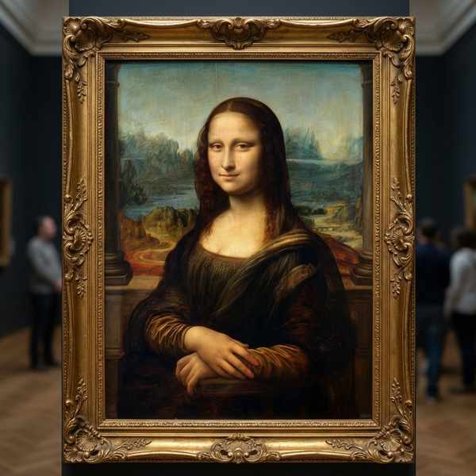
- ミケランジェロ：大理石から「ダビデ像」を彫り出し、システィーナ礼拝堂の巨大天井画「最後の審判」を描いた巨匠。
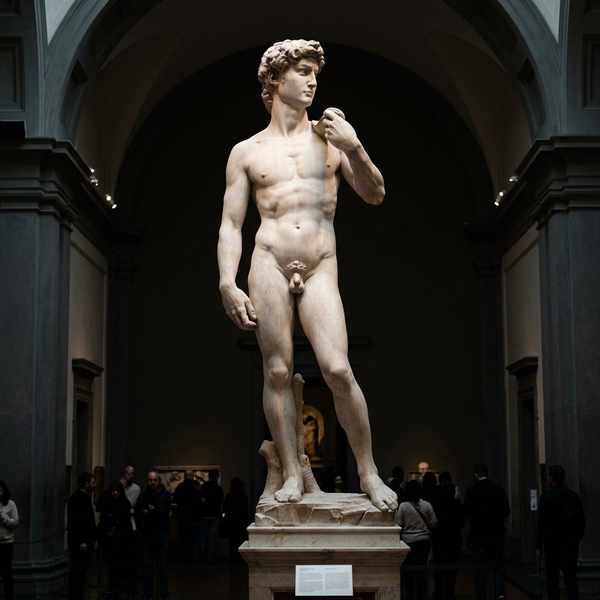
- ラファエロ：「小椅子の聖母」など、調和のとれた穏やかで優美な聖母子像を数多く描いた。
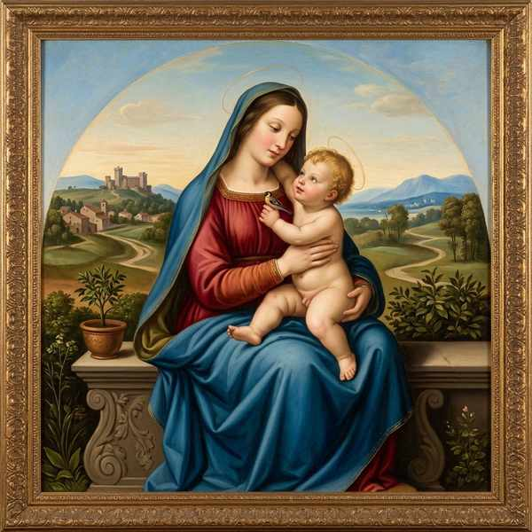
- ボッティチェリ：初期ルネサンスの画家。「春（プリマヴェーラ）」や「ヴィーナスの誕生」を描いた。
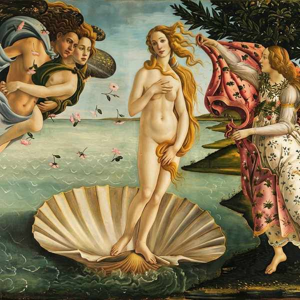
3. 印象派とポスト印象派（近代絵画の夜明け）
19世紀後半、写真の登場などに伴い、輪郭線や写実性よりも、刻々と変化する「光」や「空気感」そのものを明るい色彩で捉えようとした絵画革命です。
① 印象派（フランス）
- クロード・モネ：印象派の名前の由来となった「印象・日の出」や、「睡蓮（すいれん）」の連作、「日傘をさす女」を描き、自然光のうつろいを捉え続けた。
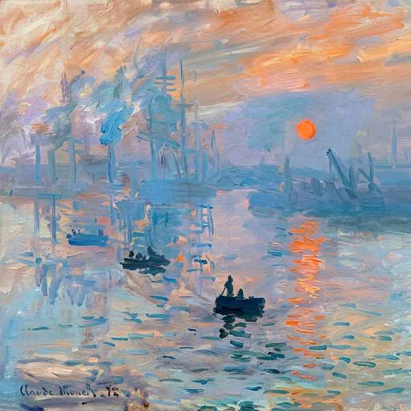
② ポスト印象派（印象派のその先へ）
- フィンセント・ファン・ゴッホ：うねるような激しいタッチと強烈な色彩で「ひまわり」や「星月夜」を描き、自己の感情を表現した。
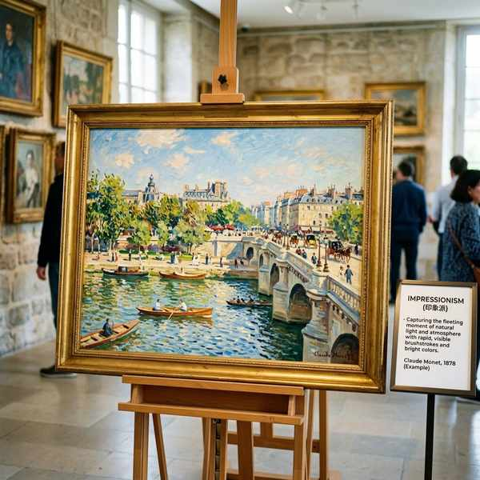
- ポール・セザンヌ：風景や静物を円柱やりんご（球）などの幾何学的な形と捉えて描き、ピカソらの先駆となって「近代絵画の父」と呼ばれる。
4. 20世紀前半の美術運動から現代アートへ
形を解体する試みから、感情・無意識の探求、そしてポップアートへと多様化します。
① 20世紀の多様な美術運動
- キュビスム（立体派）：対象を単一の視点から描くのではなく、複数の視点から見て幾何学的な形に分解・再構成して1つの画面に描く手法。
- パブロ・ピカソ：キュビスムの創始者。スペイン内戦時の無差別爆撃に対する怒りと悲しみを大作「ゲルニカ」に描いた。
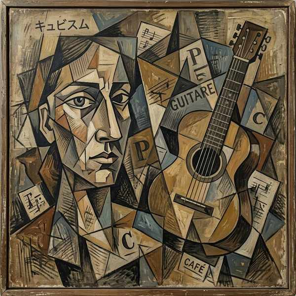
- パブロ・ピカソ：キュビスムの創始者。スペイン内戦時の無差別爆撃に対する怒りと悲しみを大作「ゲルニカ」に描いた。
- シュルレアリスム（超現実主義）：夢の中や無意識の世界といった、現実にはあり得ない世界をあえて写実的に描く芸術運動。
- サルバドール・ダリ：ぐにゃりと溶けた時計を描いた「記憶の固執」で高名。
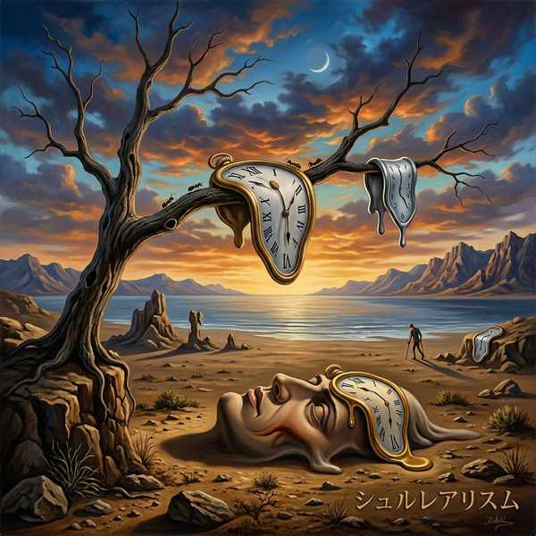
- サルバドール・ダリ：ぐにゃりと溶けた時計を描いた「記憶の固執」で高名。
- オーギュスト・ロダン：ブロンズ彫刻「考える人」で知られる、「近代彫刻の父」と呼ばれるフランスの彫刻家。
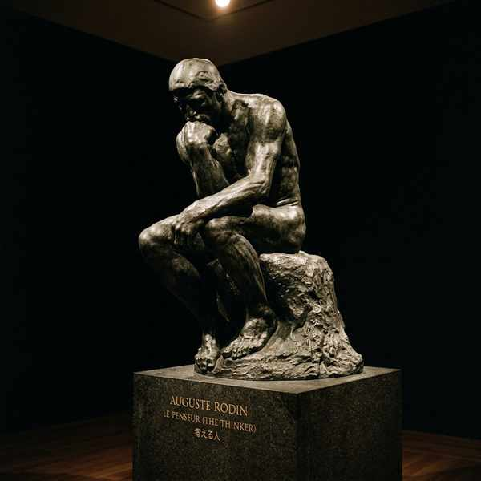
② 第二次世界大戦後のポップアート
- ポップアート：戦後の大量生産・大量消費社会を背景に、コカ・コーラやキャンベル・スープ缶、有名人の写真をあえて芸術の題材にした芸術手法。
- アンディ・ウォーホル：ポップアートの旗手。シルクスクリーン（版画）の技法を用いて画像を複製し、大衆的なアートを大量生産した。
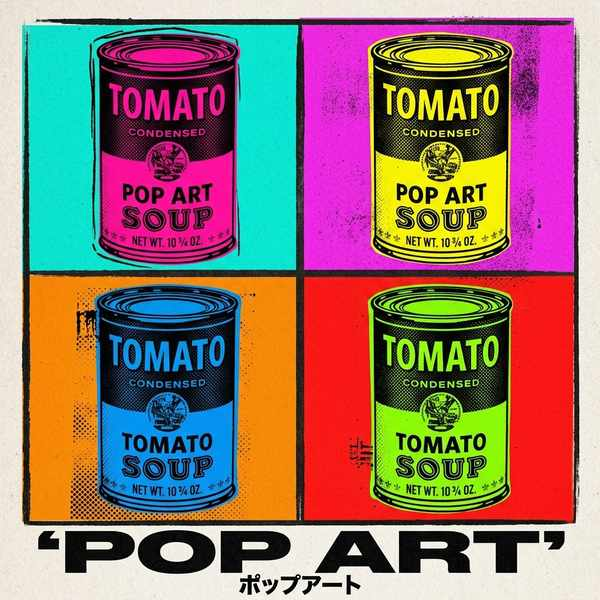
- アンディ・ウォーホル：ポップアートの旗手。シルクスクリーン（版画）の技法を用いて画像を複製し、大衆的なアートを大量生産した。
🔥 定期テスト対策・暗記のコツ
① ラスコーとアルタミラの区別
「フランスのラスコー」「スペインのアルタミラ」という国と遺跡の組み合わせは、世界地理のテストでも美術史でも非常によく出題されます。
② ルネサンスの定義
ルネサンスとはフランス語で「再生（ギリシャ・ローマ文化の復興、人間中心の文化への回帰）」を意味します。言葉の意味そのものを問う記述問題が頻出します。
③ 印象派・キュビスム・シュルレアリスムの違い
「光の変化を捉える ➔ 印象派（モネ）」「幾何学的に分解・多視点 ➔ キュビスム（ピカソ）」「夢・無意識の写実 ➔ シュルレアリスム（ダリ）」という3大美術運動の定義をセットで区別して覚えましょう。